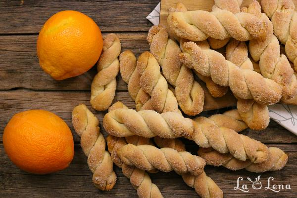

Biscuiti grecesti cu suc de portocale
(Koulourakia), de post

Dificultate-ușor
Timp de preparare-60 min
Cantitatea-35 bucăți
Vrei să primești rețete noi pe email?
Pasul 1 Puneti in 3 pahare de aproximativ 250ml - zahar, ulei si suc de portocale, apoi turnati-le intr-un bol in care vom pregatit aluatul. Pasul 2 Adaugati coaja rasa de la o portocala, 1 lingurita de sare si esenta de vanilie, amestecati. Pasul 3 Puneti aproximativ 700g de faina si praf de copt, amestecati aluatul cu o lingura sau spatula. Pasul 4 Apoi adaugati restul de faina treptat si va opriti cand obtineti un aluat uniform, moale, nelipicios si usor de lucrat, ca o plastilina. Il mai framantati putin pe masa si lasati 10 minute. Pasul 5 Apoi taiati aluatul bucati de marime medie (aproximativ cat 2 nuci). Pasul 6 Din fiecare modelati baghete cat mai subtiri, de aproximativ 7-8mm in diametru. Pasul 7 Le indoiti si rasuciti in forma de spirala. Pasul 8 Una din fetele spiralei o treceti prin zahar tos (turnat intr-o farfurie) si usor apasati ca sa se prinda zaharul de ea, dar numai pe o parte, nu toata spirala. Pasul 9 Asezati biscuitii koulourakia astfel formati intr-o tava asternuta cu hartie de copt, cu partea glazurata in sus. Pasul 10 Se coc timp de 20-25 de minute in cuptorul preincalzit la 200 de grade, sau pana se rumenesc uniform.
Lasati in tava sa se raceasca complet, sau minim 30 de minute.
Sunt deliciosi, aromati, crocanti si cu gust de Grecia...
Pofta Buna!